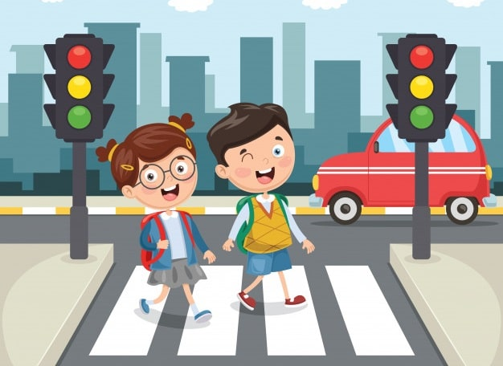
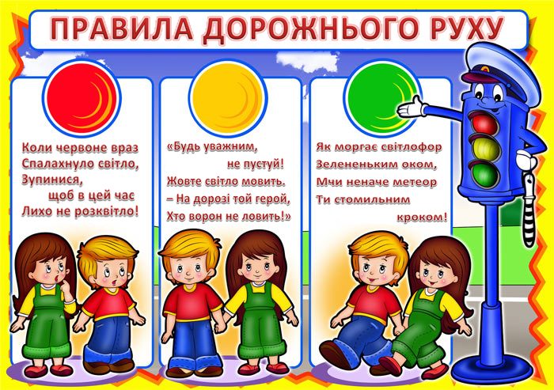
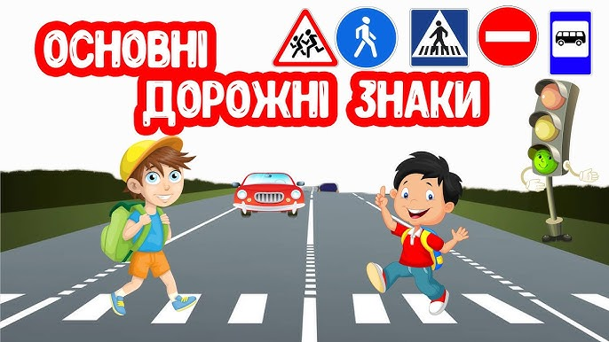
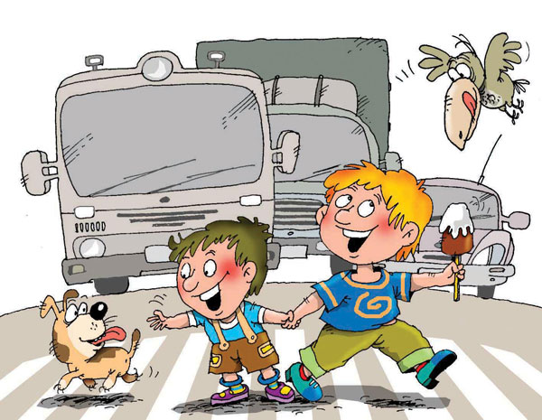

1. Переходимо дорогу правильно
Йди лише на «зебрі» та коли впевнений, що машини зупинилися. Завжди дивись ліворуч, потім праворуч. Будь як справжній детектив — помічай усе довкола!

2. Друзі світлофора
Зелений — можна йти, але не біжи! Жовтий — готуйся. Червоний — стоп! Світлофор — твій друг, не ігноруй його сигнали.

3. Велосипед — це не іграшка
Одягни шолом і не ганяй по дорозі! Велосипедист має свої правила, як справжній водій. Поважай інших і їдь обережно!

4. Розпізнаємо дорожні знаки
Дорожні знаки — мов таємні коди. Якщо їх розшифруєш — будеш чемпіоном безпеки! Знак «Стоп» — стій, знак «Діти» — обережно, тут школярі.

5. Ходи з розумом
Гуляючи з друзями — не штовхайся, не біжи на дорогу. Тримай друга за руку, не грайся на проїжджій частині. Безпека — це круто!
